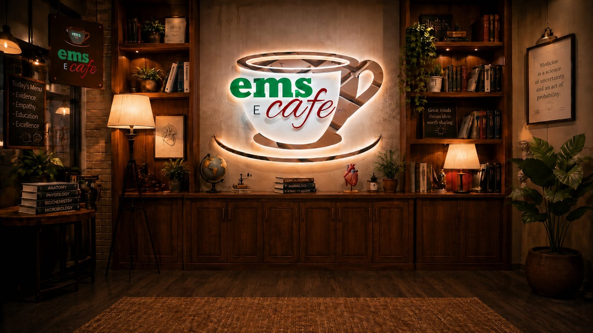

Where pre-hospital professionals learn, reflect and share ideas.
Independent education, Grand Rounds and clinical discussion for Ireland’s pre-hospital community.
Choose how you want to engage.
Browse structured learning, join a live session, work through a case, review clinical references or continue the conversation with colleagues.
Grand rounds
Live and recorded multidisciplinary teaching with space for questions and post-session discussion.
Learning café
Structured topics, short learning activities, knowledge checks and reflective practice.
Case discussions
Carefully reviewed clinical cases focused on reasoning, uncertainty, systems and human factors.
Reference library
Guidelines, journal summaries, ECG examples, infographics and teaching resources.
The break room
A moderated professional space for questions, debate, reflection and multidisciplinary exchange.
Your learning record
Access completed activities, certificates, reflections and discussion history in one secure place.


Good clinical discussion starts with curiosity, not certainty.
Each case explores the assessment, decisions, communication, treatment, escalation and system factors that shaped care—without reducing learning to a final diagnosis.
Bring something to the table.
Present a case, propose a grand-rounds topic, contribute a journal review or facilitate a professional discussion.